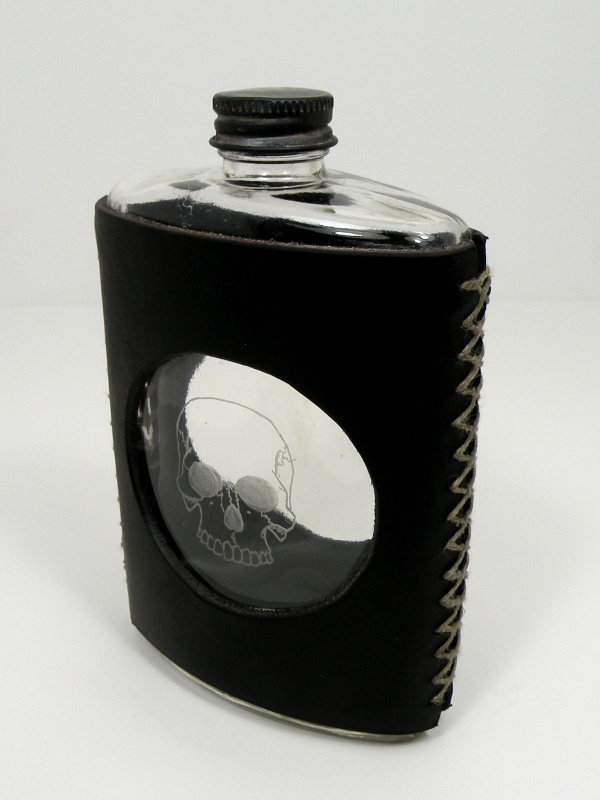

Buccaneer's Flask Buccaneer's Flask
Buccaneer's Flask Buccaneer's FlaskI have small collection of hip flasks, despite the fact that I never use them, nor am I any great imbiber of spirits. Wherever comes the fascination, I have flasks ranging from fine Irish pewter to antique glass, and this one of my own design.
I found this old flask bottle covered in a cheap, paper souvenir wrapper bearing the name of a nearby town. The glued-on wrapper had little to recommend it, however there was a cutout in the paper which allowed the drinker to see how much remained in the bottle; an idea which I thought worthy of replication.
I cut the leather for the sheath from the shafts of a pair of discarded engineer boots and purposefully stitched it together crudely. I cut the windows in the center with a sharpened pipe, circular, though they elongated when I squeezed the bottle into the sheath. The skull was engraved using diamond points in a rotary tool.
The final effect is either that of a grim reminder - a memento mori - of the deadly poison which lies within, or simply really cool pirate swag. The drinker may choose his interpretation.
Created by Sean Corron, April 2, 2011.